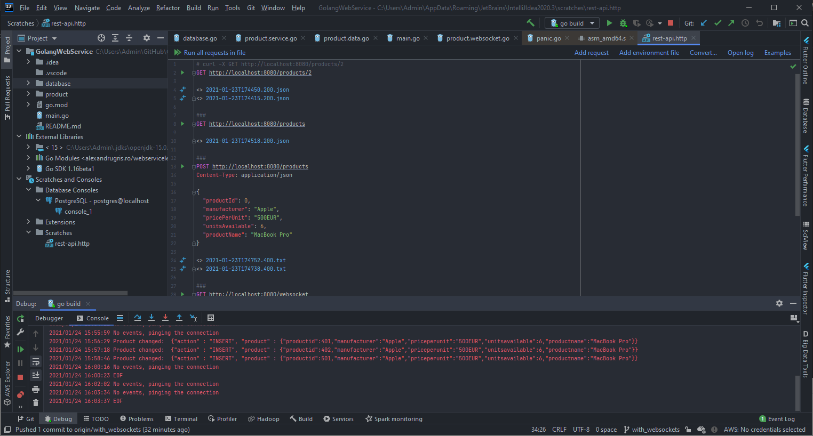
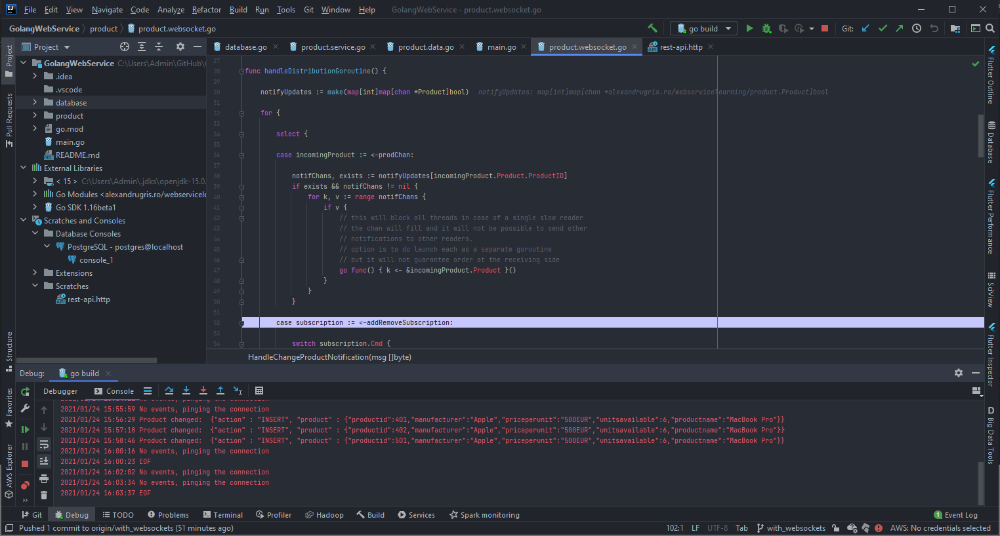
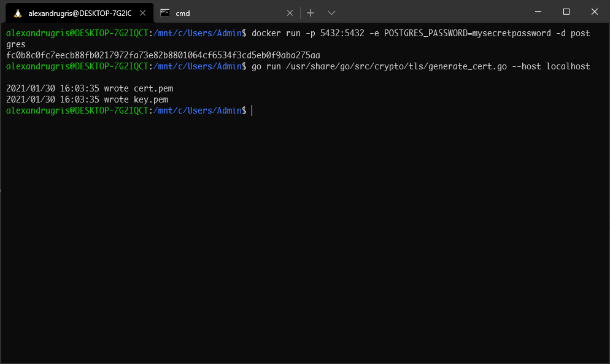
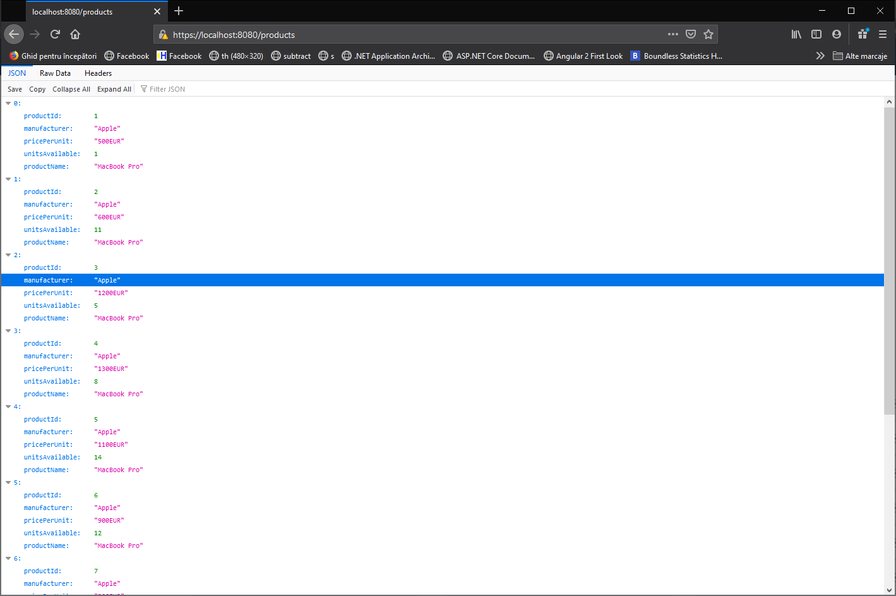

First Steps In Go - WebSockets
These are my first steps in Go, this time learning how to extend my previous web service with WebSockets. The brower subscribes to changes to a set of products by sending one or more Subscribe or Unsubscribe JSON messages to the service, through a WebSocket connection. Each message contains a series of product IDs. The server maintains the map connection - subscriptions and listens to notifications on product changes from a Postgres database. The post also touches HTTPS, HTTP/2 and server push.
Testing
We will be building on the foundations laid in the previous blogpost. The code is on GitHub, here
To open and send commands to our WebSocket server, in Javascript Console, in any browser, you can do:
// connect to our websocket endpoint
let ret = new WebSocket("ws://localhost:8080/websocket")
// subscribe to changes to the first 1024 product IDs
req.send(JSON.stringify({command: "subscribe", productIDs: [...Array(1024).keys()]}))
req.onmessage = (msg) => console.log(msg)
Later, when we want to test the connection closing, do
req.close()
Meanwhile, from a different console, we will be performing POST, PUT and DELETE requests to change the products in the database. These requests are similar to the following:
POST http://localhost:8080/products
Content-Type: application/json
{
"productId": 0,
"manufacturer": "Apple",
"pricePerUnit": "500EUR",
"unitsAvailable": 6,
"productName": "MacBook Pro"
}

Database Changes
In order to be able to listen to changes in the database, we will use the LISTEN / NOTIFY system from Postgresql. We are going to create a trigger which sends JSON messages whenever an update to the Products table occurs and we are going to initialize a listener in our service code to such events.
The trigger procedure below:
CREATE OR REPLACE FUNCTION notify_event_on_products_update() RETURNS TRIGGER AS $$
DECLARE
data json;
notif json;
BEGIN
IF (TG_OP = 'DELETE') THEN
data = row_to_json(OLD);
ELSE
data = row_to_json(NEW);
END IF;
notif = json_build_object(
'action', TG_OP,
'product', data
);
PERFORM pg_notify('product_change', notif::text);
RETURN NULL;
END
$$ LANGUAGE plpgsql;
DROP TRIGGER IF EXISTS products_change_trigger ON products;
CREATE TRIGGER products_change_trigger AFTER INSERT OR UPDATE OR DELETE ON products
FOR EACH ROW EXECUTE PROCEDURE notify_event_on_products_update();
Now, that we have this procedure, the code that listens to the emitted events, is listed below. It is invoked as a goroutine and acts as a backgorund service. It uses directly the pq package instead of the sql package because it relies on native Postgres functionality - the listen/notify mechanism.
// ListenForNotifications should be invoked as a goroutine
func ListenForNotifications(event string, notif func(json []byte)) error {
listener := pq.NewListener(ConnectionString, 1*time.Second, 10*time.Second,
func(ev pq.ListenerEventType, err error) {
log.Println(ev)
if err != nil {
log.Println(err)
}
})
if err := listener.Listen(event); err != nil {
return err
}
for {
select {
case n := <-listener.Notify:
// updates
notif([]byte(n.Extra))
case <-time.After(90 * time.Second):
log.Println("No events, pinging the connection")
if err := listener.Ping(); err != nil {
fmt.Println(err)
return err
}
}
}
}
The snippent which launches listening is in the main function,
go func() {
if err := database.ListenForNotifications("product_change",
product.HandleChangeProductNotification); err != nil {
log.Fatal(err)
}
}()
The WebSocket Endpoint
First, initialize the route. Please notice the websocket package instead of the http used above.
func GetHTTPHandlers() map[string]http.Handler {
return map[string]http.Handler{
"/products": http.HandlerFunc(productsHandler),
"/products/": http.HandlerFunc(productHandler),
// new handler for websocket
// notice the websocket. package instead of the http.
"/websocket": websocket.Handler(productChangeWSHandler),
}
}
And then the handler itself. Its structure is straight forward:
- Exit the function when the connection closes.
- Register a cleanup sequence for when the connection finished.
- Launch a goroutine to listen to incoming messages and EOF error, signifing the connection closing.
- Loop in the same goroutine to send the relevant data to the client.
func productChangeWSHandler(ws *websocket.Conn) {
// make the chan buffered so we can receive more messages until we process them
inMsgChan := make(chan inMessage, 1024)
inProductsUpdated := make(chan *Product, 1024)
defer func() {
addRemoveSubscription <- chanSubscriptionCmd{
Cmd: "closeconn",
CommChan: inProductsUpdated,
}
// drain the channel
for range inProductsUpdated {
}
}()
go func(ws *websocket.Conn) {
for {
ws.MaxPayloadBytes = 1024 * 256
var msg inMessage
if err := websocket.JSON.Receive(ws, &msg); err != nil {
log.Println(err)
break
}
inMsgChan <- msg
}
close(inMsgChan)
}(ws)
for {
select {
case msg, ok := <-inMsgChan:
// subscribe - unsubscribe
if !ok {
return // connection close
} else {
addRemoveSubscription <- chanSubscriptionCmd{
Cmd: msg.Cmd,
ProductIDs: msg.ProductIDs,
CommChan: inProductsUpdated,
}
}
case product, ok := <-inProductsUpdated:
// updated products
if !ok {
return
}
if err := websocket.JSON.Send(ws, product); err != nil {
log.Println(err)
return
}
}
}
}
The Algorithm
The algorithm is straight forward. It keeps a map of productIDs - channels listening for updates. When an update comes for a specific product ID, all the channels are notified. The interesting part is the use of goroutines for synchronization between processes. The map is local to a goroutine, which is launched as a service when the application starts, and all communications with it happen over channels. There is no shared memory involved and no shared-memory-specific synchronization primitives. The commented ode below.
A notable mention is the fact that clearing the subscription on connclose event is very slow as the function has to iterate through all the registered products. In a production scenario, I'd keep another map, a reversed index, so that I the relationship channel -> productID is faster to navigate. In our case it would have only make the code longer and less readable.
// shared channel on which the listen-notify db mechanism sends the products
var prodChan = make(chan productNotification, 1024)
// shared channel on which subscriptions are added / removed
var addRemoveSubscription = make(chan chanSubscriptionCmd)
func handleDistributionGoroutine() {
// our map, product id -> channels
// the second map is used because there is no Set in go
notifyUpdates := make(map[int]map[chan *Product]bool)
for {
select {
case incomingProduct := <-prodChan:
notifChans, exists := notifyUpdates[incomingProduct.Product.ProductID]
if exists && notifChans != nil {
for k, v := range notifChans {
if v {
// this will block all threads in case of a single slow reader
// the chan will fill and it will not be possible to send other
// notifications to other readers.
// option is to do launch each as a separate goroutine
// but it will not guarantee order at the receiving side
go func() { k <- &incomingProduct.Product }()
}
}
}
case subscription := <-addRemoveSubscription:
switch subscription.Cmd {
case "subscribe":
for _, prd := range subscription.ProductIDs {
ret, ok := notifyUpdates[prd]
if !ok {
ret = make(map[chan *Product]bool)
notifyUpdates[prd] = ret
}
ret[subscription.CommChan] = true
}
case "unsubscribe":
for _, prd := range subscription.ProductIDs {
delete(notifyUpdates, prd)
}
case "closeconn":
// empty the rest
// we might wrap the following in a goroutine
// so we don't block futher incoming messages
emptyKeys := make([]int, 0, 100)
for k, v := range notifyUpdates {
delete(v, subscription.CommChan)
if len(v) == 0 {
emptyKeys = append(emptyKeys, k)
}
}
// clear the map of empty keys
for _, k := range emptyKeys {
delete(notifyUpdates, k)
}
close(subscription.CommChan)
default:
log.Printf("Unhandled command %v", subscription.Cmd)
}
}
}
}
// module init function to start the map service
func init() {
go handleDistributionGoroutine()
}

HTTPS and HTTP/2
Before we launch to production our service, we need to make sure we secure it. In order to accept connections over HTTPS, we need to change our http.ListenAndServe invocation to http.ListenAndServeTLS and provide the call a certificate. We are going to generate ourselves such a certificate using generate_cert.go utility from the crypto/tls package.

The cert.pem file is the certificate with my public key inside while key.pem is my private key. When the session is established, a shared session key is generated by the client, signed with my public key. It is only I who can decode the shared key using my private key. The shared key is used to symmetrically encrypt messages
If I try to open now my service in Fireforx I get a security warning, but after I accept the warning I can access my service over https.

The nice thing about go is that, once I upgrade to HTTPS, I automatically upgrade to HTTP/2. This change comes for free and includes out-of-the-box features such as:
- Request multiplexing
- Header compression
- Security by default, since it is running over HTTPS
- Server push
From these, we will discuss a bit server push. What server push does is to send to the client assets which were not previously requested before they are requested. An example is when the browser requires index.html and we know that it is styled with main.css, append to the request this file also. This saves loading times and browser roundripts. A problem arises when the asset is cached with Cache-Control in which condition it will get pushed anyway, increasing the size of the request. A simple solution to this issue is to set a cookie when the page is visited and, if the cookie is present, do not send the asset with server push. If the cookie is present we can safely assume the browser has the asset already cached and, if not, it will be requested anyway when it encounters it.
Since not all connections have the ability to do server push, we need to check for this capability. In our handler we do:
func mySeverPushRequest(w http.ResponseWriter, r *http.Request) {
// get the pusher interface out of our writer
if pusher, ok := w.(http.Pusher); ok {
if cookieAssetsPushed, err := r.Cookie("assetspushed"); err == nil {
// set cookie and cache control for one hour
pusher.Push("main.css", &http.PushOptions {
Header: http.Header{
"Content-Type": []string{"text/css"} ,
"Cache-Control": []string{"max-age=3600"},
}
})
// 1h expiration time
expiration := time.Now().Add(time.Hour)
cookie := http.Cookie{
Name: "assetspushed",
Value: "true",
Expires: expiration,
}
http.SetCookie(w, &cookie)
}
}
// continue serving files or executing templates
[.......................]
}